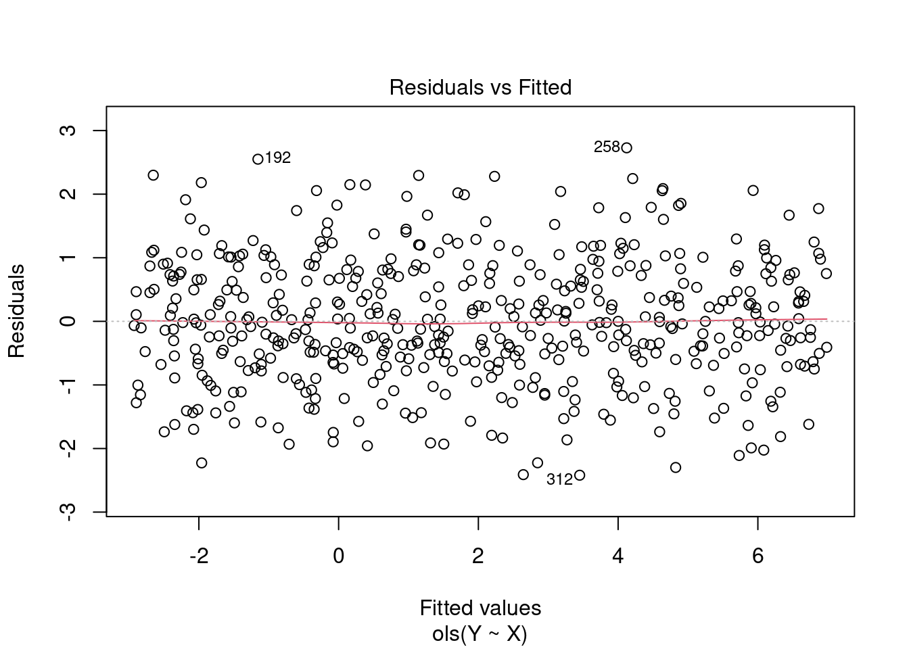
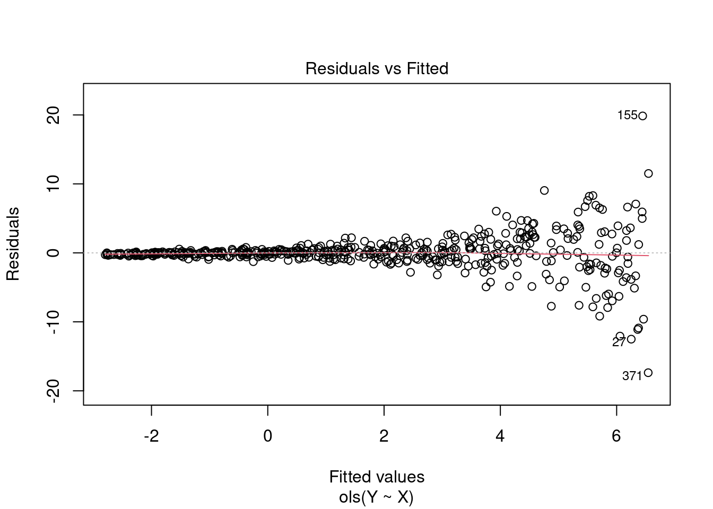

Consult parts 1 to 4 if you want more background information simulations and resampling in R
Modifications (Chris Slaughter)
Allow for different sample sizes
Add robust standard error estimates for comparison
Use the rms packages and ols function to fit linear models
Consider different error distributions
Regression Assumptions
There are a number of assumptions that underpin linear regression models. Simulation can be a useful way of exploring these assumptions and understanding how violating these assumptions can lead to bias, large variance in the regression coefficients, and/or poor predictions.
Some typical assumptions include:
Homoskedasticity
Multicollinearity of independent variables
Measurement Error
Serial correlation
Today, we will explore the assumption of homoskedasticity and the distribution of the error terms for varying sample sizes.
Coverage Probability
We will primarily be evaluating the coverage probability. The coverage probability is the probability that confidence interval will contain the true values of interest. Coverage probability is a common frequentist statistic that is used to describe the behavior of a model.
We can estimate the the coverage probability through statistical simulation. If we simulate many datasets and calculate a 95% confidence interval based on each dataset, we can count the number of times that the confidence interval contains the true value. If a 95% CI contains the true value 95% of the time, the coverage probability is correct.
Lab Instructions
Consider the following simulation as currently written. Run the simulation an obtain the results for baseline simulation and the homoskedastiicity simulation.
Modify the simulation code to include robust standard error estimates in addition to classical standard error estimates. Then, compare the coverage probabilities of the intercept and slope when using robust standard errors to classical standard errors.
Create a new section to allow us to modify the models further. Consider
Different sample sizes, particularly sample sizes below 500. How does sample size impact the coverage probabilities when using the robust and classical standard error estimates?
Different distributions for the error variance rather than Normal. Such as,
t-distribution with 1 d.f. (Cauchy; very heavy tailed)
t-distribution with 7 d.f. (heavy tailed, less so)
exponential (1) - 1 (skewed right, subtract 1 so has mean 0)
Other distributions of your choice
I will collect results from the class and collect in a table so we can see that patterns, if any, that appear
Creating the baseline simulation
Before exploring how violations of the homoskedasticity assumption influence a regression model, we need a baseline model to compare it against. So, we will begin by simulating a simple linear regression with 1 predictor. Our model will look like this:
\(y = 2 + 5*x + e\)
Where e will be random error from a normal distribution with a mean of 0 and standard deviation of 1.
── Conflicts ───────────────────────────────────────── tidymodels_conflicts() ──
✖ purrr::discard() masks scales::discard()
✖ dplyr::filter() masks stats::filter()
✖ dplyr::lag() masks stats::lag()
✖ recipes::step() masks stats::step()
• Search for functions across packages at https://www.tidymodels.org/find/
library(patchwork)library(rms)
Loading required package: Hmisc
Loading required package: lattice
Loading required package: survival
Loading required package: Formula
Attaching package: 'Hmisc'
The following object is masked _by_ '.GlobalEnv':
knitrSet
The following object is masked from 'package:parsnip':
translate
The following objects are masked from 'package:dplyr':
src, summarize
The following objects are masked from 'package:base':
format.pval, units
Loading required package: SparseM
Attaching package: 'SparseM'
The following object is masked from 'package:base':
backsolve
## set seed for reproducibilityset.seed(58968)## create a data frame to store intercept values, slope values, their standard errors, and the model residual standard error, for each simulationsim_params <-data.frame(intercept =NA,slope =NA,intercept_se =NA,slope_se =NA,model_rse =NA)# true intercept valueintercept <-2# true slope valueslope <-5## Number of indepdendent observationsn <-500## Number of simulation replications to runreps <-5000# random draw from a uniform distribution to simulate the predictor variableX <-runif(n = n, min =-1, max =1)## loop for regression modelfor(i in1:reps){# create dependent variable, Y Y <- intercept + slope*X +rnorm(n = n, mean =0, sd =1)# build model model <-ols(Y ~ X, x=TRUE)# # store predictions fitted_vals <- model$fitted.values# # store residuals# output_df[i, 2] <- model$residuals# variance-covariance matrix for the model vcv <-vcov(model)# estimates for the intercept sim_params[i, 1] <- model$coef[1]# estimates for the slope sim_params[i, 2] <- model$coef[2]# SE for the intercept sim_params[i, 3] <-sqrt(diag(vcv)[1])# SE for the slope sim_params[i, 4] <-sqrt(diag(vcv)[2])# model RSE sim_params[i, 5] <- model$stats["Sigma"]}head(sim_params)
The final model of the ‘r reps’ iterations is also stored from our for loop and we can look directly at it and create plots of the model fit.
d<-datadist(X)options(datadist="d")# model summarymodel
Linear Regression Model
ols(formula = Y ~ X, x = TRUE)
Model Likelihood Discrimination
Ratio Test Indexes
Obs 500 LR chi2 1121.81 R2 0.894
sigma0.9745 d.f. 1 R2 adj 0.894
d.f. 498 Pr(> chi2) 0.0000 g 3.264
Residuals
Min 1Q Median 3Q Max
-2.42004 -0.63347 -0.02173 0.71448 2.72872
Coef S.E. t Pr(>|t|)
Intercept 2.0326 0.0436 46.57 <0.0001
X 4.9585 0.0765 64.78 <0.0001
# model fit plotsplot(model, which=1)
We can also create a function that lets us evaluate how often the 95% confidence interval of our simulated beta coefficients cover the true beta coefficients that we specified for the simulation. From there, we can get a coverage probability and a 95% probability coverage interval
### Create a coverage probability functioncoverage_interval95 <-function(beta_coef, se_beta_coef, true_beta_val, model_df){ level95 <-1- (1-0.95) /2# lower 95 lower95 <- beta_coef -qt(level95, df = model_df)*se_beta_coef# upper 95 upper95 <- beta_coef +qt(level95, df = model_df)*se_beta_coef# what rate did we cover the true value (hits and misses) hits <-ifelse(true_beta_val >= lower95 & true_beta_val <= upper95, 1, 0) prob_cover <-mean(hits)# create the probability coverage intervals low_coverage_interval <- prob_cover -1.96*sqrt((prob_cover * (1- prob_cover)) /length(beta_coef)) upper_coverage_interval <- prob_cover +1.96*sqrt((prob_cover * (1- prob_cover)) /length(beta_coef))# results in a listreturn(list('Probability of Covering the True Value'= prob_cover,'95% Probability Coverage Intervals'=c(low_coverage_interval, upper_coverage_interval)))}
$`Probability of Covering the True Value`
[1] 0.9538
$`95% Probability Coverage Intervals`
[1] 0.9479814 0.9596186
In both cases we are covering the true betas around 95% of the time, with relatively small intervals.
Homoskedasticity
Linear models make an assumption that the variance of the residuals remain constant across the predicted values (homoskedastic). We can see what this looks like by plotting the fitted values relative to the residuals, which was the first plot in the model check plots we created for the last simulation above. We can see that the residuals exhibit relatively the same amount of variance across the fitted values.
plot(model, which =1)

Let’s simulate a model with heteroskedastic residuals and see what it looks like. We will keep the same intercept and slope parameters as above. The only thing will we do is add an exponential parameter to the error term of the model to create a heteroskedastic outcome in the residuals.
## parameter for heteroskedasticity heteroskedasticity_param <-2## set seed for reproducibilityset.seed(22)## data frame for resultsheteroskedastic_sim_params <-data.frame(intercept =NA,slope =NA,intercept_se =NA,slope_se =NA,model_rse =NA)## for loopfor(i in1:reps){# the error variance of Y is a function of X plus some random noise Y <- intercept + slope*X +rnorm(n = n, mean =0, sd =exp(X*heteroskedasticity_param))# model heteroskedastic_model <-ols(Y ~ X, x=TRUE)# variance-covariance matrix vcv <-vcov(heteroskedastic_model)# estimates for the intercept heteroskedastic_sim_params[i, 1] <- heteroskedastic_model$coef[1]# estimates for the slope heteroskedastic_sim_params[i, 2] <- heteroskedastic_model$coef[2]# SE for the intercept heteroskedastic_sim_params[i, 3] <-sqrt(diag(vcv)[1])# SE for the slope heteroskedastic_sim_params[i, 4] <-sqrt(diag(vcv)[2])# model RSE heteroskedastic_sim_params[i, 5] <- heteroskedastic_model$stats["Sigma"]}head(heteroskedastic_sim_params)
The coefficients of 2.0 for the intercept and 5 for the slope are exactly what we set them as for the simulation. However, notice how much larger the standard errors are for the intercept and slope compared to the original model above. Additionally, notice that the model residual standard error has increased substantially compared to the previous model.
Let’s get the last model again and check out the fitted vs residual plot.
# fitted vs residualsplot(heteroskedastic_model, which =1)

That looks like a large amount of heteroskedasticity as the residual variance is no longer homogenous across the range of fitted values. Notice the large fanning out towards the right side of the plot. As the predictions get larger so two does the variability in residuals, which we noticed when we plotted Y and X above.
What we’ve learned is that the estimate of intercept and slope is unbiased for both the heteroskedastic and homoskedastic models, as they both are centered on the parameters that we specified for the simulation (intercept = 2, slope = 5). However, the heteroskedastic model creates greater variance in our coefficients. We can visualize how much uncertainty there is under the heteroskedastic model relative to the homoskedastic model by visualizing the density of the coefficient estimates from our two model simulations.
$`Probability of Covering the True Value`
[1] 0.829
$`95% Probability Coverage Intervals`
[1] 0.8185637 0.8394363
Notice that we are no longer covering the true model values at the 95% level.
Source Code
---title: "Lab 2: Assumption in Linear Regression"author: "Patrick Ward (original), Chris Slaughter (modifications)"format: html: code-tools: trueeditor: visual---## Introduction- Original simulation (Patrick Ward) - [Simulations in R Part 5: Homoskedasticity Assumption in Regression](https://optimumsportsperformance.com/blog/simulations-in-r-part-5-homoskedasticity-assumption-in-regression/) - Consult parts 1 to 4 if you want more background information simulations and resampling in R- Modifications (Chris Slaughter) - Allow for different sample sizes - Add robust standard error estimates for comparison - Use the rms packages and ols function to fit linear models - Consider different error distributions## Regression AssumptionsThere are a number of assumptions that underpin linear regression models. Simulation can be a useful way of exploring these assumptions and understanding how violating these assumptions can lead to bias, large variance in the regression coefficients, and/or poor predictions.Some typical assumptions include:1. Homoskedasticity2. Multicollinearity of independent variables3. Measurement Error4. Serial correlationToday, we will explore the assumption of homoskedasticity and the distribution of the error terms for varying sample sizes.## Coverage ProbabilityWe will primarily be evaluating the **coverage probability**. The **coverage probability** is the probability that confidence interval will contain the true values of interest. Coverage probability is a common frequentist statistic that is used to describe the behavior of a model.We can estimate the the coverage probability through statistical simulation. If we simulate many datasets and calculate a 95% confidence interval based on each dataset, we can count the number of times that the confidence interval contains the true value. If a 95% CI contains the true value 95% of the time, the coverage probability is correct.## Lab Instructions1. Consider the following simulation as currently written. Run the simulation an obtain the results for baseline simulation and the homoskedastiicity simulation.2. Modify the simulation code to include robust standard error estimates in addition to classical standard error estimates. Then, compare the coverage probabilities of the intercept and slope when using robust standard errors to classical standard errors.3. Create a new section to allow us to modify the models further. Consider 1. Different sample sizes, particularly sample sizes below 500. How does sample size impact the coverage probabilities when using the robust and classical standard error estimates? 2. Different distributions for the error variance rather than Normal. Such as, - t-distribution with 1 d.f. (Cauchy; very heavy tailed) - t-distribution with 7 d.f. (heavy tailed, less so) - exponential (1) - 1 (skewed right, subtract 1 so has mean 0) - Other distributions of your choice 3. I will collect results from the class and collect in a table so we can see that patterns, if any, that appear## Creating the baseline simulationBefore exploring how violations of the homoskedasticity assumption influence a regression model, we need a baseline model to compare it against. So, we will begin by simulating a simple linear regression with 1 predictor. Our model will look like this:$y = 2 + 5*x + e$Where `e` will be random error from a normal distribution with a mean of 0 and standard deviation of 1.```{r}library(tidymodels)library(patchwork)library(rms)## set seed for reproducibilityset.seed(58968)## create a data frame to store intercept values, slope values, their standard errors, and the model residual standard error, for each simulationsim_params <-data.frame(intercept =NA,slope =NA,intercept_se =NA,slope_se =NA,model_rse =NA)# true intercept valueintercept <-2# true slope valueslope <-5## Number of indepdendent observationsn <-500## Number of simulation replications to runreps <-5000# random draw from a uniform distribution to simulate the predictor variableX <-runif(n = n, min =-1, max =1)## loop for regression modelfor(i in1:reps){# create dependent variable, Y Y <- intercept + slope*X +rnorm(n = n, mean =0, sd =1)# build model model <-ols(Y ~ X, x=TRUE)# # store predictions fitted_vals <- model$fitted.values# # store residuals# output_df[i, 2] <- model$residuals# variance-covariance matrix for the model vcv <-vcov(model)# estimates for the intercept sim_params[i, 1] <- model$coef[1]# estimates for the slope sim_params[i, 2] <- model$coef[2]# SE for the intercept sim_params[i, 3] <-sqrt(diag(vcv)[1])# SE for the slope sim_params[i, 4] <-sqrt(diag(vcv)[2])# model RSE sim_params[i, 5] <- model$stats["Sigma"]}head(sim_params)```Now we summarize the data to see if we have values close to the specified model parameters```{r}# Calculate mean for each column of sim_paramsapply(sim_params, 2, mean)```The final model of the 'r reps' iterations is also stored from our for loop and we can look directly at it and create plots of the model fit.```{r}d<-datadist(X)options(datadist="d")# model summarymodel# model fit plotsplot(model, which=1)```We can also create a function that lets us evaluate how often the 95% confidence interval of our simulated beta coefficients cover the true beta coefficients that we specified for the simulation. From there, we can get a coverage probability and a 95% probability coverage interval```{r}### Create a coverage probability functioncoverage_interval95 <-function(beta_coef, se_beta_coef, true_beta_val, model_df){ level95 <-1- (1-0.95) /2# lower 95 lower95 <- beta_coef -qt(level95, df = model_df)*se_beta_coef# upper 95 upper95 <- beta_coef +qt(level95, df = model_df)*se_beta_coef# what rate did we cover the true value (hits and misses) hits <-ifelse(true_beta_val >= lower95 & true_beta_val <= upper95, 1, 0) prob_cover <-mean(hits)# create the probability coverage intervals low_coverage_interval <- prob_cover -1.96*sqrt((prob_cover * (1- prob_cover)) /length(beta_coef)) upper_coverage_interval <- prob_cover +1.96*sqrt((prob_cover * (1- prob_cover)) /length(beta_coef))# results in a listreturn(list('Probability of Covering the True Value'= prob_cover,'95% Probability Coverage Intervals'=c(low_coverage_interval, upper_coverage_interval)))}```Let's apply it to the intercept.```{r}coverage_interval95(beta_coef = sim_params$intercept,se_beta_coef = sim_params$intercept_se,true_beta = intercept,model_df = model$df.residual)```Now apply it to the slope```{r}coverage_interval95(beta_coef = sim_params$slope,se_beta_coef = sim_params$slope_se,true_beta = slope,model_df = model$df.residual)```In both cases we are covering the true betas around 95% of the time, with relatively small intervals.## HomoskedasticityLinear models make an assumption that the variance of the residuals remain constant across the predicted values (homoskedastic). We can see what this looks like by plotting the fitted values relative to the residuals, which was the first plot in the model check plots we created for the last simulation above. We can see that the residuals exhibit relatively the same amount of variance across the fitted values.```{r}plot(model, which =1)```Let's simulate a model with heteroskedastic residuals and see what it looks like. We will keep the same intercept and slope parameters as above. The only thing will we do is add an exponential parameter to the error term of the model to create a heteroskedastic outcome in the residuals.```{r}## parameter for heteroskedasticity heteroskedasticity_param <-2## set seed for reproducibilityset.seed(22)## data frame for resultsheteroskedastic_sim_params <-data.frame(intercept =NA,slope =NA,intercept_se =NA,slope_se =NA,model_rse =NA)## for loopfor(i in1:reps){# the error variance of Y is a function of X plus some random noise Y <- intercept + slope*X +rnorm(n = n, mean =0, sd =exp(X*heteroskedasticity_param))# model heteroskedastic_model <-ols(Y ~ X, x=TRUE)# variance-covariance matrix vcv <-vcov(heteroskedastic_model)# estimates for the intercept heteroskedastic_sim_params[i, 1] <- heteroskedastic_model$coef[1]# estimates for the slope heteroskedastic_sim_params[i, 2] <- heteroskedastic_model$coef[2]# SE for the intercept heteroskedastic_sim_params[i, 3] <-sqrt(diag(vcv)[1])# SE for the slope heteroskedastic_sim_params[i, 4] <-sqrt(diag(vcv)[2])# model RSE heteroskedastic_sim_params[i, 5] <- heteroskedastic_model$stats["Sigma"]}head(heteroskedastic_sim_params)plot(X, Y, pch =19)```The relationship between X and Y certainly looks weird given how it starts very tightly on the left side and then fans out on the right side.Let's take the average across all simulations for each coefficient and their corresponding standard errors.```{r}apply(heteroskedastic_sim_params, 2, mean)```The coefficients of 2.0 for the intercept and 5 for the slope are exactly what we set them as for the simulation. However, notice how much larger the standard errors are for the intercept and slope compared to the original model above. Additionally, notice that the model residual standard error has increased substantially compared to the previous model.Let's get the last model again and check out the fitted vs residual plot.```{r}# fitted vs residualsplot(heteroskedastic_model, which =1)```That looks like a large amount of heteroskedasticity as the residual variance is no longer homogenous across the range of fitted values. Notice the large fanning out towards the right side of the plot. As the predictions get larger so two does the variability in residuals, which we noticed when we plotted Y and X above.What we've learned is that the estimate of intercept and slope is unbiased for both the heteroskedastic and homoskedastic models, as they both are centered on the parameters that we specified for the simulation (intercept = 2, slope = 5). However, the heteroskedastic model creates greater variance in our coefficients. We can visualize how much uncertainty there is under the heteroskedastic model relative to the homoskedastic model by visualizing the density of the coefficient estimates from our two model simulations.```{r}plt_intercept <- sim_params %>%mutate(model ='homoskedastic model') %>%bind_rows( heteroskedastic_sim_params %>%mutate(model ='heteroskedastic model') ) %>%ggplot(aes(x = intercept, fill = model)) +geom_density(alpha =0.6) +theme_classic() +theme(legend.position ="top")plt_slope <- sim_params %>%mutate(model ='homoskedastic model') %>%bind_rows( heteroskedastic_sim_params %>%mutate(model ='heteroskedastic model') ) %>%ggplot(aes(x = slope, fill = model)) +geom_density(alpha =0.6) +theme_classic() +theme(legend.position ="none")plt_intercept | plt_slope```Finally, let's see how often the 95% coverage interval is covering the true intercept and slope in the heteroskedastic model.```{r}coverage_interval95(beta_coef = heteroskedastic_sim_params$intercept,se_beta_coef = heteroskedastic_sim_params$intercept_se,true_beta = intercept,model_df = model$df.residual)coverage_interval95(beta_coef = heteroskedastic_sim_params$slope,se_beta_coef = heteroskedastic_sim_params$slope_se,true_beta = slope,model_df = model$df.residual)```Notice that we are no longer covering the true model values at the 95% level.